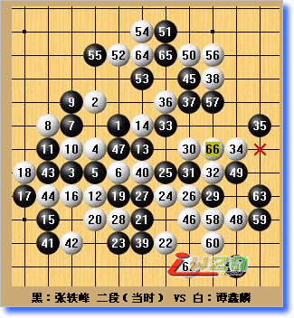
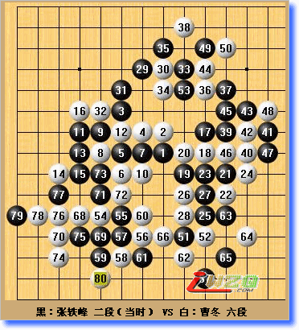
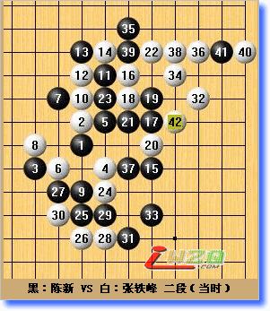

追忆2007全锦赛
#1 追忆2007全锦赛 作者：有志青年 发表时间：2007-11-27 13:54:28
从2003年到2007年，从22岁到26岁，从26名到12名，除去当兵二年空白，这就是接触五子棋二年时间给自己的答卷。这些数据并不能表示自己很出色，反而显得自己走的很缓慢。相比较下让我觉得有收获的是自己的心理确实成熟了不少。记得第一次参加全国赛时我心底的目标是不要最后一名。可这次我却是想去夺冠为目标。在很惊讶心理变化的差异如此大的同时认为自己有这个实力。可惜对持黑棋缺乏进攻思路导致2败就好象起床的闹钟声。让人那么不愿意去接受这个从美好梦境醒来的事实。在这里就先和各位分享这两盘“中药棋局”。
这是对阵谭鑫麟的一局，也是最惋惜的一局。我开局流星，对方没有交换。白4变招。行至白8，是我没有料到的。黑9在长考后走出强攻的想法。试看对方是怎么类型的棋手并且期待他和我对攻。但是他很耐心。白28只好转攻为守。对于白36手我很后悔前面的强攻。但我发现对手的性格是全面控制，等我自己崩溃，然后轻松获胜。所以白38我估计很确定。黑43的目的是针对他将来I6做棋。对于防守我还是很有信心。白54后已经没有太大危险了。但在高度紧张后由于黑55思想上太松懈了。心里没把白56当一回事。最后前功尽弃。

这是对阵曹冬的一局，也是最胸闷的一局。说实话我很想能和曹冬下。第二届全国赛，他开松月把我活活骗了一把，很想报仇。而且这次也是证明自己进步到什么程度的大好机会。我开疏星局。正常对弈到黑19手。做在旁边的吴镝笑了笑，其实我并没有抄袭他的走法。只不过前面确实没什么异议的最佳走法。本打算21手变着。这时曹东长考后先变着。不过这也在我预计范围内。在白38后明显黑优并且对方只有2分30秒了。而自己还有30分钟。根据局面分析棋面确实没有胜机。但太想胜利再次冲昏我头脑。“没有杀就骗杀”。黑39？草率的一步。白40很快的应对！我很震惊。白48又一个最强防后。我被迫防守了。他时间仍然是2分多。往后我时间好尽就在他的节奏下，下着快棋。不知道自己在走什么。只知道白80手我输了……我感觉到强大的拍钟能力！真是旧恨为报，又添新伤啊。

这是对阵新的一局，也是走的最惊心肉跳的一局。我开局新月，对手交换后，行至白6后，对方黑7完全超出我预料。我在平时就遇见过一次。没什么定论和研究，但是黑棋很优，新月局黑棋本来就几乎必胜，所以也没什么在乎。现在摆在我面前是一道多么难做的题目啊。
当我白8长考完后已经有对局结束了。白10当时看来不是最强也是次强了。黑11依然控制。痛苦的走完白14后。我已经用了1个小时了。黑15！我当时就想这个家伙是不是疯了？竟然不直接进攻，还是感觉开新月轻视他，想让我好好后悔，慢慢折磨我。左看右看怎么防都是死，黑棋有无数种方法杀死我。好吧，既然你不攻我来攻。白16！我能断定最强的走法。目的也很简单，减少他能进攻存在的线路。黑17跳三，有点感觉对手如梦初醒。但是这时跳三却不如再控制一下效果好。白22跳三也是最佳防守了。白24后我的心跳才恢复到65/分钟。之后我吸取了对谭鑫麟是的教训，没有松懈。白32转机，真正意义上的进攻。对于黑33我已经计算很清楚了。而且对手似乎也想和我博命。黑37？本来很紧张的攻防，由于他的漏看一下子变的简单了。其实这里我犯个小错误。A8应该冲四后再走36手才对。这样惊险的赢了一盘。

（作者系上海五子棋委员会会员、三段棋手）